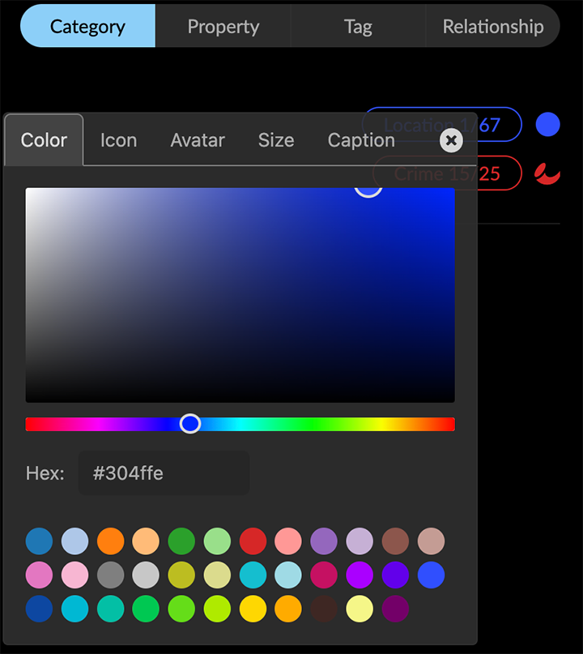

Working in a Project A GraphXR project represents a 3-dimensional, functionally infinite space that includes the full capability to navigate, edit, analyze, and visualize graph data. When you first open a project, its space is empty. You can: Import data by drag and drop, data mapping, or query. Navigate, search, select, and filter data in the project space and in Tables. Create or extend graph data models directly in GraphXR using: Transforms. Add and delete nodes and edges. Create and edit category and relationship labels, and property names and values. Intuitively visualize data in the 3D space using: Customized layouts, including Parametric 2D or 3D scatter plots, Geometric Line, Circle, Grid, Cube, Sphere, and Spiral layouts, Tree layouts, and more. Trace, Find, and spotlight multi-hop paths through the graph. Filtering on numerical (e.g. date, time) or categorical (e.g. text strings such as name, city, etc.) properties. Geospatial maps, for nodes with latitude and longitude properties. Run widely used graph algorithms such as Path Finding and Centrality. Save and share graph data to data Views, Snapshots, GXRF files, CSV or Excel archives, or to a connected Neo4j database. You can also save and export a data mapping as a JSON file. On the desktop, menus and controls provide the tools you’ll need to work with graph data: A Main Menu along the left vertical edge of the project space, to open panels for importing, transforming, and displaying data. A Search bar at the top left, to perform full-text search on either indexed data in a connected Neo4j database, or data displayed in the project. A View Menu, at the center of the top, to save data views or load saved views. A Legend, along the top right side of the space, to display and select nodes by category, tag, or property, and edges by relationship. A context Toolbar, along the bottom of the space, with tools available to use on data currently present or selected. A set of GUI Navigation controls, at the bottom right, for 3D navigation within the project. GraphXR can be used with WebX-connected virtual reality (VR); these controls simulate a VR experience on the desktop. Main menu The Main menu on the left edge of the graph space provides access to menu panels and navigation to the home Projects page, logout, or GraphXR information. Mouse over a menu icon to display its label, or click the Main menu icon at the top left to show or hide the menu labels. Most main menu panels are further divided into tabs. Click an icon to display its panel. Project panel The Project panel lets you save, update, and access data views, review graph entities, set overall display preferences, import and export data, and access extensions. Tabs in the Project panel include: View tab, to display data views which have been saved to the server, save, update, select, annotate views, and load a data view to the project space. Category and Relationship tabs, to review the defined graph entities, pull specific types of nodes or edges from a connected database and set preferences for display of entities and their properties. Settings tab, to control the size scale, display mode, and captioning of nodes and edges, to set 2D Mode, show or hide the Snapshot dialog, switch to a different Neo4j Database, and modify the project UI Configuration. Data tab, to import data in standard formats such as CSV and GXRF, save data as a CSV or Excel archive, GXRF, or Neo4j database, export all current data views, save an SVG as SVG or PDF, take a PNG screenshot, and create a template from the current project that can be applied to other projects. Extensions tab, to access standard or custom extensions which may be available. Query panel The Query panel lets you enter and save Cypher queries on a Neo4j database, and to query SQL databases (MySQL, MSSQL, or PostgreSQL), CSV or JSON files, or use the Gremlin graph traversal language. The SQL and CSV tabs include the Mapping Editor to map data in a flat CSV file or SQL table to a graph model. Transform panel The Transform panel lets you model and transform graph data directly in GraphXR. This suite of data operators includes: f(x), to execute functions similar to formulas in Excel and SQL or functions in MapReduce frameworks. You can run formulas to add information from one column of data to another, or to modify data formats. Extract, to extract properties from existing nodes to create new nodes and edges and create a new category and relationship. Aggregate, to collect properties from a starting node’s neighboring edges and nodes, apply a calculation, and write the result back to the starting node as a property. Merge, to combine two nodes with matching properties into a single node. Link, to connect nodes with the same property values. This can be used to bring two different data sets together and also to draw explicit connections among nodes of the same type. Shortcut, to connect two nodes that share a common neighbor with a new link. You can use this to simplify the graph. Connector, to provide access to external applications for enhancing or transforming data. Table panel The Table panel provides live view of data by Category or Relationship in a searchable tabular format. Enhanced Tables let you rename categories and relationships on the fly, select, sort, edit, reformat, and then export the data in the edited table as a CSV or Excel archive. Layout panel The Layout panel leets you apply Force, Parametric,Geometric, and Tree layouts to all or part of your data. Filter panel The Filter panel lets you filter data by Node or Edge properties using multiple composable filters. You can filter on numerical property values including date-time and latitude/longitude, as well as categorical(text string) property values. Algorithm panel The Algorithm panel lets you run Path Finding, Centrality, and Community Detection graph algorithms. Results are added to nodes or edges as a property value. Map panel The Map panel leets you work with geospatial data on a world map. Nodes with latitude and longitude coordinates are automatically dropped onto the map. Site Navigation and Information At the bottom left the main menu includes items to: Logout. Log out of GraphXR. Home. Return to the Projects home page. Shortcut. Quick reference to keyboard and mouse shortcut keys for navigation and data selection. See also Shortcut Keys Reference. About. Review the GraphXR version and take a Quick Start Tour. Search Bar The search bar at the top left enables full-text search. You can either: Search the indexed property data in a connected Neo4j database, and import the results to the project, or Search the data already in the graph. Indexed properties are set using the Search Index Configuration dialog. Search results are listed by category below the search bar. Click a single node or a group of nodes in the search results to import the data from the database, or to select nodes returned by a search of data already in the project space. Legend A legend at the top right corner of the project space lets you review and select data by Category, Relationship, Tag, or Property. Select Category, Tag, or Property to display a list of categories, tags, or properties present in the data, and the number of currently selected and total nodes of each. Likewise, select Relationship to display a list of the relationships in the data, and the number of currently selected and total edges for each. When you display categories and relationships at the same time, the relationships are listed below the categories. You can: Monitor how many nodes of each category, tag, property (or edges of each relationship) are currently selected. An addition or subtraction from a selection is immediately updated. Click a list item to select all the nodes for a category, tag, or property, or all the edges for a relationship. Use ctrl-left click to select multiple items. Click the colored line or dot next to a list item to set colors, icons, and more: For a category, you can set Color, an Icon, and select properties to be used for one or more Captions, an Avatar url, and relative node Size.  For a relationship, you can set the Color, and select properties for Captions and Bind Width (relative width of the edge). For a listed property value or tag, you can set a Color or an Icon. See Using Display Options. Context Toolbar The context toolbar at the bottom edge of the project space displays icons for one-click tools used to navigate, select, and lay out data. Some tools are available only when you select more than one node or edge, or only when you select a single node or a node that has an associated url and weblink property. So as to remain accessible, tool icons are responsively arranged in 2 (or more) rows as you make the browser window narrower. Right-click Context Menu A floating context menu of the tools available for your current selection is available by right-clicking anywhere in the project space. It is an easier way to navigate and edit the graph without using the toolbar or opening additional panels. In addition, the menu can be customized as needed. The default right-click menu includes the following often-used tools at the top level: Information, Add Node, Add Edge, Expand,Find Path, Center To, Fly Out, and Delete. Select, Actions, and Layout submenus organize tools further as follows: Select submenu: All Nodes, Add to Selection, Subtract from Selection, Invert, Deselect, Floating Nodes, Leaf Nodes, Neighbor Nodes, Neighbor Edges, Child Nodes, Parent Nodes, and Connected Nodes. Actions submenu: Change Category, Collect Nodes, Explode Nodes, Tag, Hide, Show Hidden, Pin, and Release. Layout submenu: Line, Grid, Cube, Circle, Sphere, Spiral, Tree, Ring, Expand, and Contract. Layouts are grayed out if unavailable for the selected data. By default, Quick Information, Disable/Enable Force Layout, Clear All, Screenshot, Link, and Image tools appear only in the toolbar. Most, but not all, of the functions provided in the right-click menu are available in the toolbar or one of the main menu panels. The following table lists those available only in the right-click menu. Right-Click Menu Only Function Find Path Similar to the function in the Algorithm>Path Finding tab. It finds a path between just two selected nodes. Select > Add to Selection Mouse over an unselected node, right click and use this menu item to add the node to already selected nodes. Select > Subtract from Selection Mouse over a selected node, right click and use this menu item to de-select the node. Select > Floating Nodes Nodes with no connecting edges. Select > Leaf Nodes Nodes with only one connecting edge. Select > Neighbor Nodes Nodes one hop away from selected nodes. Choose again to select nodes another hop away. This is similar to the Trace Neighbor tool, except that one hop at a time is found and the nodes are selected, not just highlighted. Select > Child Nodes_ Nodes one forward hop away from selected nodes (as shown by the direction of the connected edge). Choose again to select nodes another hop away. Select > Parent Nodes Nodes one reverse hop away from selected nodes (as shown by the direction of the connected edge). Choose again to select nodes another hop away. Select > Neighbor Edges Nodes one edge away from selected nodes. Select > Connected Nodes Nodes connected to selected edges. Actions > Change Category Displays a dialog that lets you immediately change the category of any selection of nodes to any other existing category or to a new category. Properties of the changed nodes not present in the target category are transferred. Actions>Change Category cannot be undone with Ctrl+Z. Before using it, save a data View, snapshot, or .GXRF file so that you can undo a mistaken change. Context Menu Tools The toolbar icons at the bottom edge of the project space appear depending on the data that’s currently present and/or selected. No Data Toolbar icons in a project with no data present are: Add Node. Displays a dialog to define and add a single node. Quick Info. Toggles between turning on and off Quick Info rollovers for nodes and edges. Disable/Enable Force Layout. Toggles between turning on and off a force directed physics layout. One or more nodes present Once you load or create at least one node, more toolbar icons appear. Select Visible Nodes. Selects all nodes currently visible in the graph space (those not hidden using Hide Selection or by de-selecting the Visible checkbox for a category or relationship in the Project panel). Take Screenshot. Takes a .png screenshot of the graph space including the legend, but excluding an open panel, toolbar and GUI navigation controls. Center To. Zooms in on the center of the graph data if no nodes are selected, or the center of a group of selected nodes, or a single selected node. Fly Out. Zooms out to display all the graph data centered in the project space. Collect Nodes. Collects nodes connected to selected nodes by only one edge, and places them in special collection nodes. The information panel for a collection lists the included nodes, and enables you to remove or add back nodes. Explode Collections. Deletes selected collection nodes and restores the collected nodes to the graph space. Quick Layout. Displays a menu to lay out selected data in basic Line, Grid, Cube, Circle, Sphere, Spiral, or Spring layouts, to create a hierarchical Tree or Ring layout around selected nodes, and to Expand or Contract the layout of selected nodes. Add Node. Displays a dialog to define and add a single node. Add Edge. Displays a dialog to add edges between selected nodes, either with an existing relationship or by creating a new one. Clear. Removes all data from the graph space. Pin or Release. Toggles between pinning nodes to a location in the space, or releasing nodes from being pinned. The badge on the icon shows how many nodes are currently pinned. Quick Info. Toggles between turning on or off Quick Info rollovers for nodes and edges. Disable/Enable Force Layout. Toggles between turning on and off force directed physics layout. More than one node selected When you select any group of nodes, additional tool icons appear that can be used on selected data: Information. Opens an information window for the most recently selected single node or edge. It displays information about the node’s Properties and Neighbors or a relationship’s Properties. NOTE: An Information window shows information for just one node or edge at a time. Tag. Opens the Create Tag dialog to tag any set of selected nodes. Delete. Deletes selected nodes and edges. Expand. Opens the Expand with relationships dialog to pull additional nodes from the database which are connected to the selected nodes. You can select any or all of the relationships that connect the nodes. Trace Neighbor. Displays a slider above the toolbar to display nodes connected through a path with the number of steps you choose. Inverse. Selects all nodes not currently selected. The badge at the upper right of the icon shows the number of currently selected nodes. Un-Hide Selection. Appears after you select and hide nodes. Click to restore all hidden nodes and edges to the graph space and de-select them. Hide Selection. Hides selected nodes and edges temporarily. One node selected When you select a single node, two additional tool icons appear: Image and WebLink. These two icons appear if an image and/or url is attached to a node. Select a node and click Image to display a small image in the graph space close to its node, and click again to hide the image. Click WebLink to open a browser window to a linked image or webpage. Information. Opens a floating information pane for a selected single node or edge. Its Properties tab lists the properties of the node or edge. If desired, you can add properties and edit property values in this window. Its Neighbors tab displays a count of nodes connected to the selected node through one edge, and a live graphic of the nodes and edges. GUI Navigation Controls The GUI navigation panel at the bottom right of the graph space provides simulated Virtual Reality (VR) navigation controls for use on the desktop. Click and hold the upper arrows to Move Right, Move Left, Move Up, or Move Down. Click the central circle to Reset the view to the center point of the data (similar to the Center To toolbar icon). Click and hold the middle joystick-like controls to Rotate Left or Rotate Right. Click and hold the lower arrow controls to zoom In or Out.